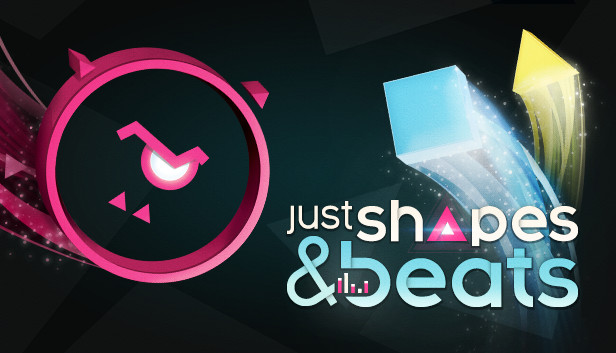
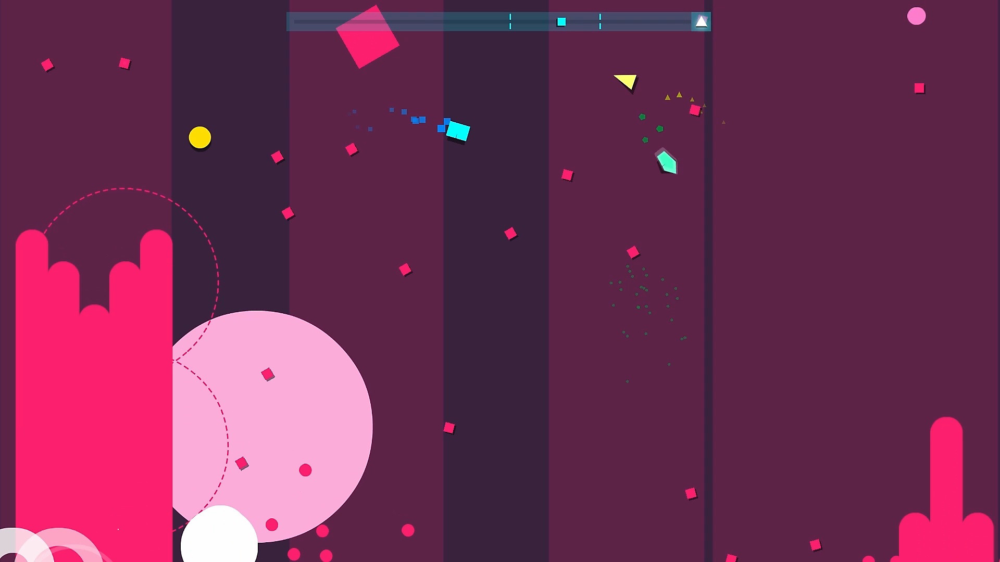

Home
News
Dropdown
Minecraft
Destiny
Just Shapes & Beats
Just Shapes & Beats
Now Just Shapes & Beats Deep lore

Just Shapes & Beats (styled Δ & ♫ or just shΔpes & beats, shortened to JSAB or JSB) is an rhythm-action SHMUP video game developed and published by Canadian indie team Berzerk Studio. It was released on May 31, 2018 for PC and Nintendo Switch, and on February 24, 2019 for macOS and Linux, with a PS4 version (known as Just Shapes & Beats: Hardcore Edition) released in North America regions on May 10, 2019.
